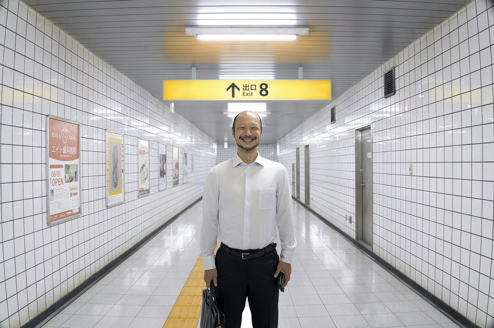
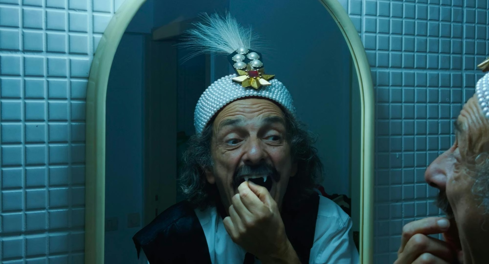

Alle Films
Below the Clouds (Sotto Le Nuvole)
.jpg)
Napels leeft onder een sluimerende dreiging. In de docu Below the Clouds brengt Gianfranco Rosi een indringend portret van een stad die zich bevindt tussen verleden en toekomst, tussen stilte en uitbarsting. Terwijl de aarde trilt, blijven archeologen graven, bewoners hopen en hulpdiensten anticiperen. De documentaire toont geen spektakel, maar een verstilde realiteit.
Rosi’s camera beweegt traag en aandachtig door steegjes, ondergrondse gangen en gezichten die spreken zonder woorden. Zonder voice-over of uitleg laat hij de beelden zelf praten: een stad in afwachting, een gemeenschap in dialoog met de natuur. Below the Clouds is een cinematografische meditatie over een leven in een seismisch landschap waar geschiedenis en geologie elkaar raken.
Exit 8
Vastzitten in een videospel is frustrerend, maar vastzitten in een levensecht videospel is veel erger. In Exit 8, gebaseerd op de gelijknamige Japanse gamehit, zit een naamloze man gevangen in een eindeloze lus van metrogangen, waar alleen het volgen van cryptische regels hem kan redden.
De film is zowel een thriller als een karakterstudie over angst, keuzes en verantwoordelijkheid. In Cannes kreeg deze eerste live-action gameverfilming ooit een ovatie van acht minuten — en terecht. Het is een breinbreker met een hart.
Dracula
Make Dracula Great Again! De Roemeense meesterprovocateur Radu Jude keert terug met een uitzinnig monster van een film. Een flamboyante regisseur die een writer’s block probeert te overwinnen, een nieuwe A.I. tool die absurdistische ideeën spuugt, en een vampierenfilm die compleet ontspoort — dit alles vormt de basis voor Jude’s meest anarchistische film tot nu toe.
Het resultaat is een satire over nationalisme, kapitalisme en de staat van de cinema. Jude noemt het zelf “mijn eerste publieksfilm, want er zit veel geweld, seks en slechte grappen in”. Niemand doet het zoals hij.
Köln 75

De rebelse Vera Brandes wil maar één ding: Keith Jarrett naar Keulen halen. Deze energieke biopic toont de bijna onmogelijke weg naar een van de meest legendarische jazzconcerten ooit. Köln 75 is een wervelende mix van muziek, chaos, jeugdige ambitie en pure cinematografische drive.
De film speelt met realiteit en reconstructie, en brengt de Berlijnse jazzscene tot leven met ritme, kleur en emotie.
Barrio Triste

Wanneer vier tieners een camera stelen, ontstaat een rauwe, hypnotiserende stroom van beelden. Barrio Triste toont het leven aan de rafelranden van Medellín in de jaren tachtig — gewelddadig, chaotisch, maar ook intiem en menselijk.
De film mixt found footage met lo-fi video en poëtische visuals. De productie door EDGLRD (Harmony Korine) maakt het geheel nóg intenser.
Toute Une Nuit

Chantal Akerman toont een reeks nachtelijke vignettes in Brussel, waarin geliefden elkaar zoeken, verliezen en terugvinden. De film beweegt op het ritme van verlangen — grillig, onbeheersbaar, teder en soms gewelddadig.
Nouvelle Vague

Linklater brengt een charmante en speelse ode aan Godards À bout de souffle. Geen zware cinefiele analyse, maar een warm, humoristisch portret van de chaotische guerillaproductie die de filmwereld voorgoed veranderde.
Blue Heron

Romvari’s debuut is een tedere, caleidoscopische herinnering aan een turbulente kindertijd vol vragen, liefde, verlies en broederbanden. De film won de prijs in Locarno en werd onmiddellijk een publieksfavoriet.
Father Mother Sister Brother

Jim Jarmusch weeft drie losse verhalen aan elkaar in zijn typische, trage, humorvolle stijl. Met vertolkingen van Adam Driver, Cate Blanchett, Tom Waits en Charlotte Rampling is dit een film die ademt in stilte, absurde momenten en onverwachte tederheid.